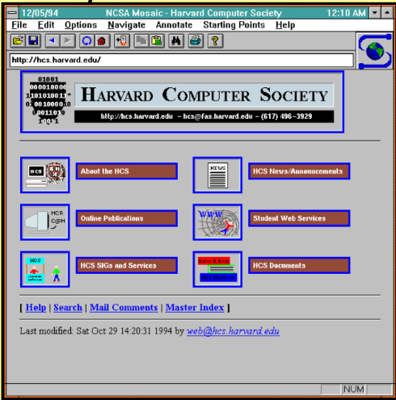

Internet
Internet betyder nätverk av nätverk. Internet är världens största datornätverk och ett system för enkel och effektiv kommunikation av text, ljud och bild. World Wide Web (dvs webbsidor), e-post och fildelning är populära användningsområden för Internet.
Internets historia
Föregångaren till Internet, ARPANET, skapades av USA:s militära forskningsanstalt Advanced Research Projects Agency,
ARPA. I slutet av 1980-talet skapades HTML och HTTP, standarderna för att beskriva och överföra webbsidor.
Under senare delen av 1990-talet ökade antalet Internetanvändare markant. Sedan den tiden har de flesta företag och
många privatpersoner en egen webbplats med webbsidor(hemsidor), och e-postadress.
W W W
World Wide Web (engelska världsomspännande nät), www, webben eller nätet är ett hypertextsystem som används på Internet.
Även om det tekniskt sett bara är ett av många användningsområden för Internet, är WWW:s genomslag så totalt att "Internet"
och "WWW" ofta används synonymt. Webben kombinerar en stor mängd avancerade tekniker till något som närmast är trivialt
enkelt att använda. World Wide Web används med en webbläsare som klientprogram.
På 1990-talet dominerade Netscape, men när Microsoft utvecklade sin webbläsare Internet Explorer till en grundkomponent
i sitt operativsystem Microsoft Windows tog den över den större delen av webläsarmarknaden och utvecklades därför
snabbt till den mest använda. På 2000-talet blev andra alternativ populära, som Firefox och Opera. Inom Mac-familjen
används främst läsaren Safari.
WWW kommer ifrån ett projekt på CERN. Dess uppfinnare är engelsmannen Tim Berners-Lee, som skapade World Wide Web år
1989. Den första webplatsen skapaden den 6 augusti 1991. Den första grafiska webplatsen var Mosaic.
Bild på webbläsaren Mosaic

HTTP
Hypertext Transfer Protocol är det kommunikationsprotokoll som används för att överföra webbsidor på informationsnätverket WWW, World Wide Web på Internet. Det utsprungliga syftet med HTTP var att tillhandahålla en metod för att överföra HTML-sidor från webbservrar till webklienter.
HTML
Hyper Text Markup Language är ett format där dokumentets struktur och logik bestäms av skaparen, medan läsaren styr
hur texten kommer att representeras. Numera är det dock vanligt att skaparen själv styr presentationen av dokumentet
med så kallade stilmallar, CSS. Tillägg programmerade i skriptspråk (exempelvis JavaScript) används ibland för att
skapa dynamiska och interaktiva webbplatser.
Denna webbsida och de flesta andra är helt eller delvis skriva i detta märkspråk. I det flesta webbläsare kan man se
källkoden till webbsidan som visas genom att gå till "Visa" i huvudmenyn och sedan "Källa" eller "Källkod". Olika
webbläsare tolkar HTML-kod på olika sätt och detta har varit ett problem gällande för världens wellutvecklare. En
gemensam standard har vuxit fram genom World Wide Web Consortium(W3C). Genom att följa denna standard ökar chansen
att webbsidan ser likadan ut i standardmedvetna webbläsare.
Lista över vanliga taggar(märkord):
a, används för att skapa hyperlänkar
br, skapar en radbrytning
h1, h2, h3, h4, h5, h6, huvudrubrik och ner till sjätte nivån av underrubriker
img, infogar en bild
p, märker upp ett textstycke
strong och em, markerar olika sorters betoning på text
hr, skapar en horisontell linje
ol och ul, skapar en sorterad respektive osorterad lista
CSS
Cascading Style Sheets (på svenska stilmall) är ett språk som beskriver presentationsstilen för ett strukturerat dokument som till exempel typsnitt, textstorlek och färg. Tekniken är ett sätt att anpassa dokumentet med hänsyn till datortyp, skärmupplösning, färgdjup och installerade typsnitt.
CSS finns specikicerat i olika "nivåer":
CSS1 (1996) innehåller information om relativt enkel formatering som bakgrundsfärger, bakgrundsbilder, teckensnitt och justering av text.
CSS2 går ett steg längre och ger möjlighet att formge hela dokumentet med positionerade rektangulära områden (boxar) som tidigare bara varit möjligt med tabeller (tables).
CSS3 ger ökat stöd för att hitta element på webbsidan som matchar vissa mönster, fler färger.
Bra länkar
Mina favoritfärger
a. svart - #000000
b. orange - #ffa500
c. mörkgrå - #a9a9a9
© Skapat av Zacharias Tärning Ljungblom 19/09/2022